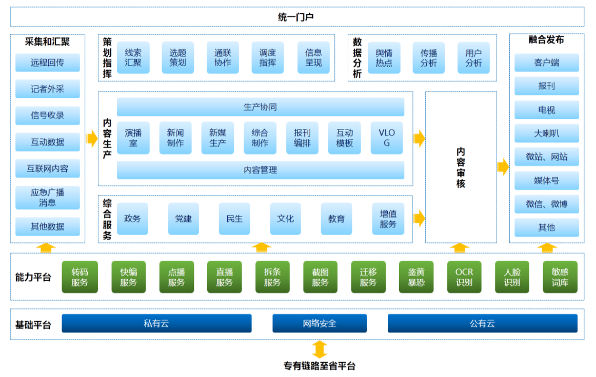

项目背景
贯彻落实习近平总书记关于媒体融合发展的重要讲话精神、中共中央《关于推动传统媒体和新兴媒体融合发展的指导意见》，顺应当前媒体发展新趋势、新挑战。正定县计划建设融媒体中心技术平台，旨在加快推进正定县原有广电媒体和新媒体的全面融合，不断提高区域新闻舆论的传播力、引导力、影响力、公信力。
解决方案
在正定县融媒体中心技术平台建设项目中，阳光云视提供面向融合媒体的内容汇聚、生产、发布的基础能力支撑平台，融合支持各种融媒体业务，实现以内容为核心，以渠道为介质的战略。利用最新的互联网技术和思维，建设融媒体生产发布平台，支持敏捷生产和新业务的弹性部署，在满足传统业务流程的同时，能够为新业务提供统一的内容支撑、技术服务、数据分析等服务一体化技术业务平台，有效支撑媒体融合创新业务的快速发展，为正定县现在乃至今后融媒体发展提供业务扩展的支撑能力。
